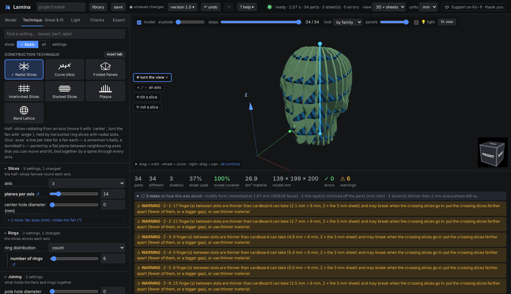
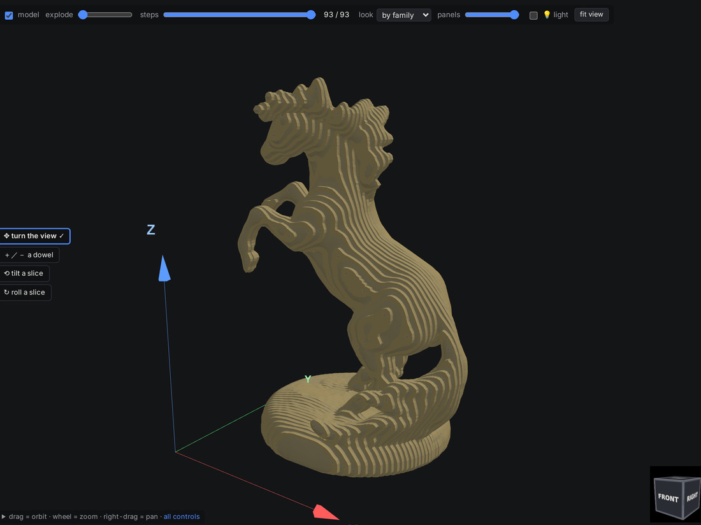
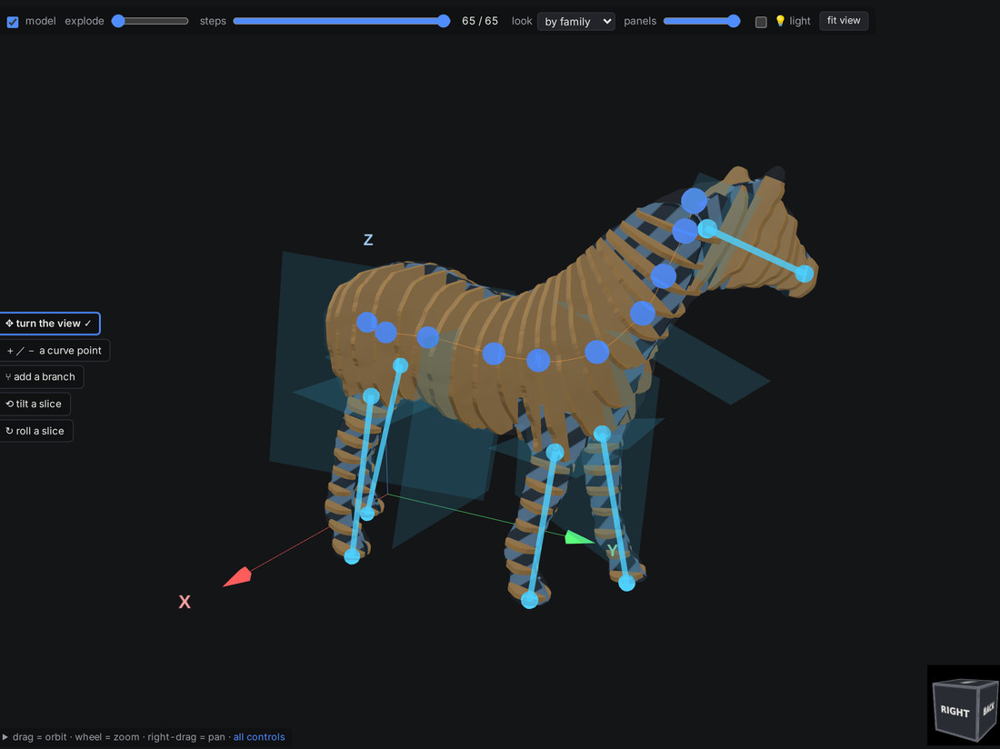
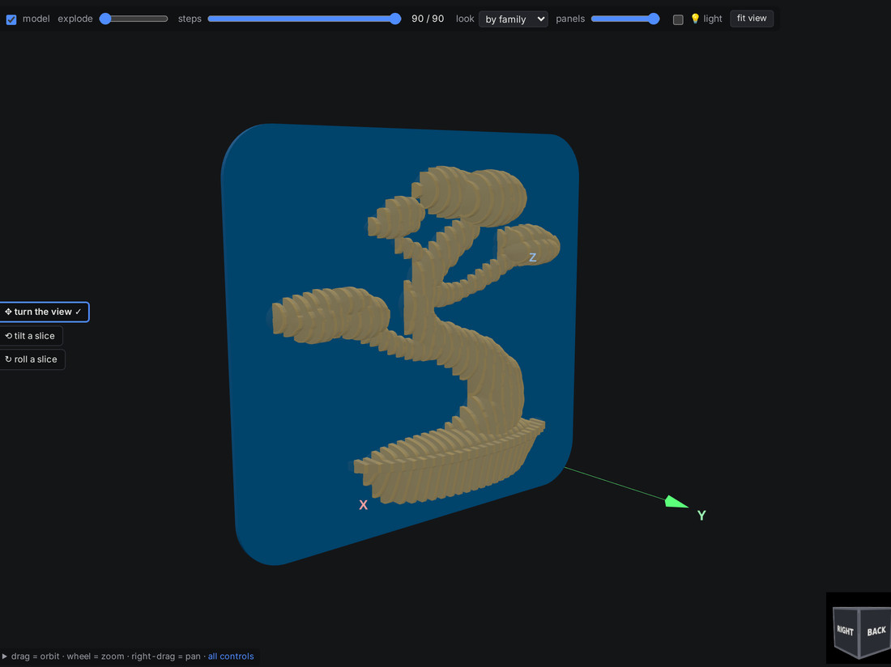
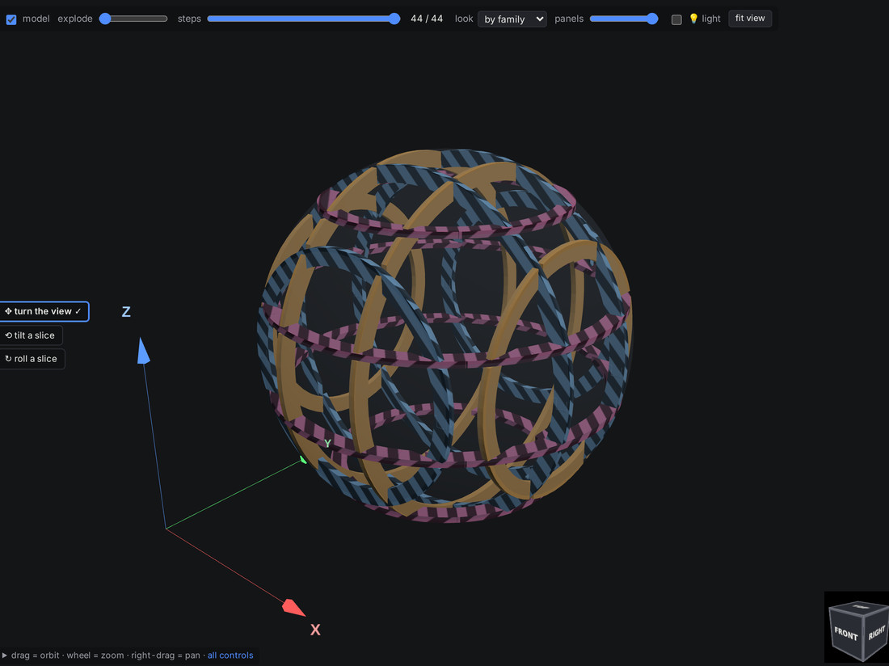
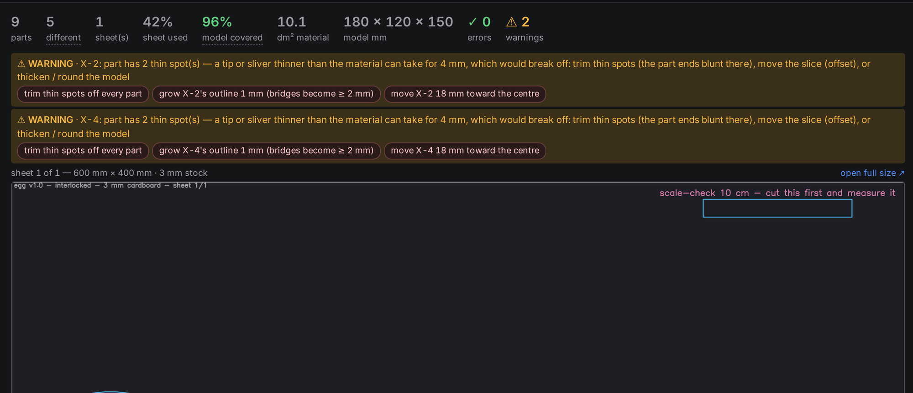
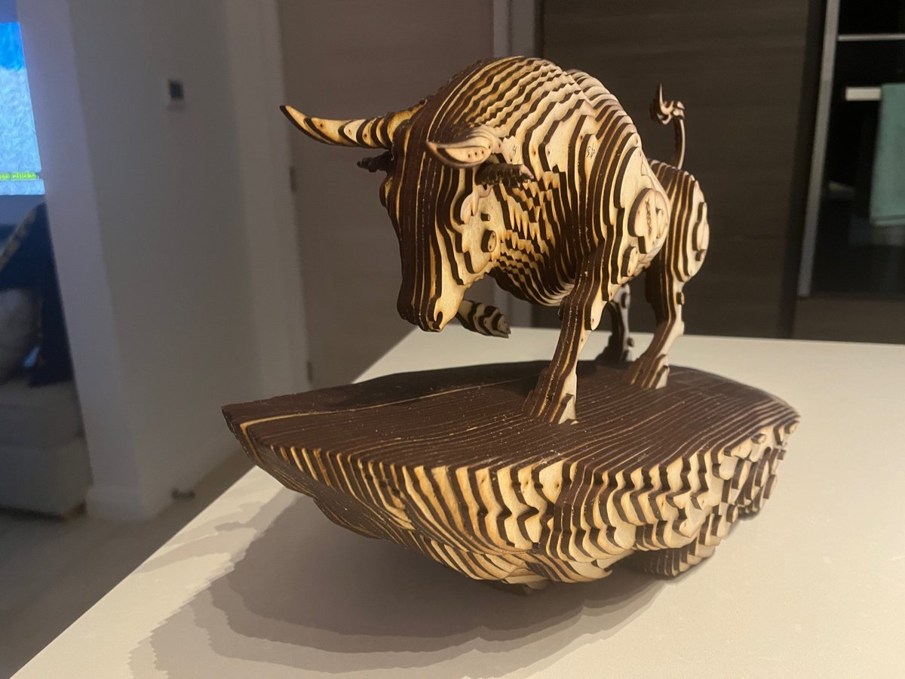
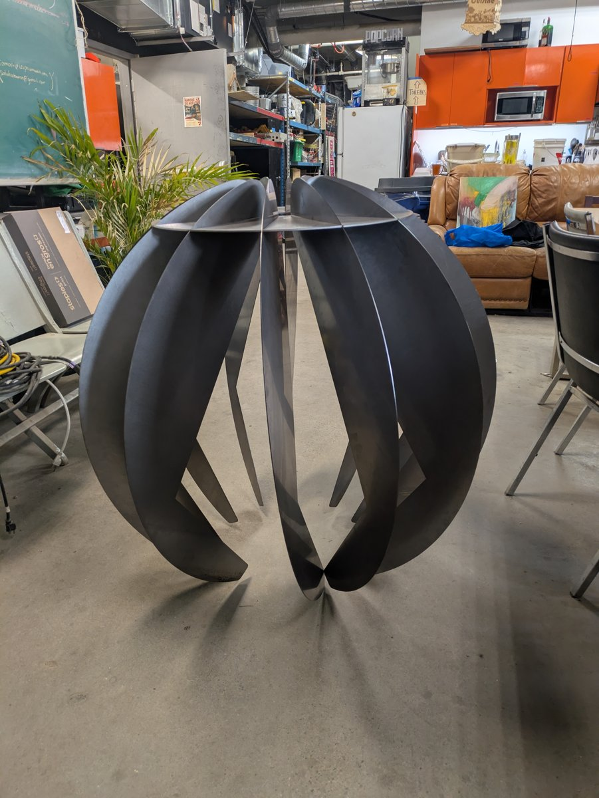

From a 3D model to flat parts: laser, CNC router or 3D printer
A laser cutter and a CNC router cut flat sheets. To make a 3D shape from them, you cut the model into flat parts and put the parts back together. A 3D printer can make the same flat parts. Lamina is a free laser and CNC slicer that does this for you. It runs in your browser, and your model stays on your computer.

What a laser slicer does
A 3D-printing slicer makes G-code: the layers of plastic for a printer. A laser slicer makes flat parts that you cut from a sheet: plywood, MDF, acrylic, cardboard, paper or sheet metal. Lamina calculates every part. Then it checks that the parts hold together, packs them on your sheets and writes the cut files. To print the parts instead, it packs them on your printer's plates and gives your 3D-printing slicer one 3MF per plate.
Pick your machine
At the top of Sheet & fit, choose what you make with. Lamina then shows the settings that machine needs.
- Laser. CO2, diode or fiber, with named machines such as Glowforge, xTool, OMTech and K40, and their bed sizes. Kerf compensation, and a fit offset for every slot.
- Router. A CNC router for plywood and MDF. Dog-bone relief puts the bit in every slot corner, and the parts lie twice the bit apart.
- 3D printer. PLA or PETG on your printer's bed, such as a Bambu Lab or a Prusa. One 3MF per plate, with settings for each part. The 3D printing guide.
- Laser + 3D printer. The laser cuts the layers, and the printer makes the standoffs and pins between them.
Plasma tables and vinyl cutters are on the list too.
The steps
- Open Lamina in your browser. You can also install it on Windows, macOS or Linux.
- Load your model. Lamina reads STL, OBJ, 3MF, PLY, OFF and GLB files, and STEP or BREP with the CAD extra.
- Turn the model upright and set its size. If a detail is too small to cut, round it off.
- Pick a construction technique. The seven techniques are below.
- Pick your machine, the material and the sheet size. Measure the sheet and type its real thickness.
- Read the Checks tab. It names each part that floats, breaks or cannot go in. Most messages have a button that fixes the problem.
- Export the cut files and open them in your laser software.
Seven ways to build the model

Stacked slices
Flat layers along one axis, glued or on dowels. The topographic look.

Interlocked slices
Two families of slices that slot together like an egg crate.

Radial slices
Half-slices round an axis, held by rings. For vases, heads and lamps.

Curve, ribs
Ribs square to a curve you draw, like the frames of a hull.

Folded panels
The surface unfolded flat, scored, folded and joined. Papercraft and more.

Plaque
Slices standing on a back plate, for the wall.

Band lattice
Rings in three directions, half-lapped where they cross.
The files you get
- SVG and DXF, with separate layers for outer cuts, inner cuts, score lines and labels. The SVG opens in LightBurn, the Glowforge app and xTool Creative Space.
- PDF with one page per sheet, and EPS per sheet.
- One file per piece if your cutter wants them that way, with a cut list.
- Labels in a single-stroke font, so the laser engraves each letter in one pass.
- Kerf compensation, a fit offset for every slot, dog-bone relief for router bits, and a scale-check bar.
- Print plates: one 3MF per plate, with the layer height, bridges and supports set for each part, a number on every part, and the pins and clips on the same plates.
- 3D files: STL and STEP of the result, and a scaled 3MF prototype to test-print before you cut.

Made with Lamina

Charging bull on a rock
Stacked slices, by Colin Robinson

Giant dragon head
Interlocked slices, by jarkien

Steel sphere
Radial slices, by Marcel
More in the gallery.
Free, and on your computer
Lamina is free software under the AGPL-3.0. It needs no account and uploads nothing. It replaces Autodesk's discontinued Slicer for Fusion 360, and it does more: see the comparison. It is young, so test-cut before you use expensive material, and tell me what broke.